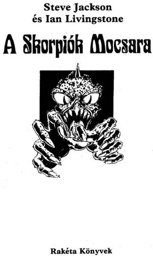
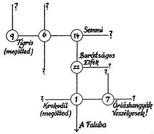
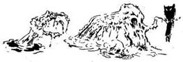
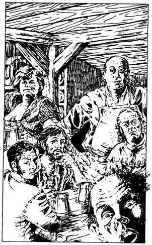

Steve Jackson and Ian Livingstone:
Scorpion Swamp
Duncan Smith illusztrációival
Fordította
Varsányi Mária
© Steve Jackson and Ian Livingstone, 1984
Hungarian translation Varsányi Mária, 1989
Varázslatok
Egy harcost személyesítesz meg a Skorpiók Mocsarában. Kalandjaid során majd rájössz, hogy képes vagy varázsolni. Ha megegyezel egy varázsióval, kaphatsz tőle Varázsgolyókat. Minden varázsgolyóval egyet varázsolhatsz. Ezek után a varázsgolyó eltűnik. Tizenkét különböző varázslatot használhatsz: ezeket alább közöljük. Ha szerzel egy Varázsgolyót, azt jegyezd fel a Kalandlapodon. Ha választhatsz a varázslatok közül, bármelyiket többször is választhatod - akár négy Tűz- varázslatot is, ha akarod. De ha elhasználtál egy varázslatot, azt jelölnöd kell a Kalandlapodon. Ha négy Tűzvarázslatot választasz, négyszer segíthet rajtad a tűz, de nem többször - hacsak nem találkozol egy újabb szolgálatkész varázsióval, akitől újabb Varázsgolyót kapsz.
Háromféle varázslat van: Jó, Gonosz és Semleges. A Semleges varázslatot bárki alkalmazhatja. Ugyanakkora jó varázslók nem használhatnak Gonosz varázslatot és fordítva. Te bármelyik varázslatot alkalmazhatod, de egy gonosz varázslótól nem kaphatsz Jó varázslatot, illetve egy jó varázslótól Gonosz varázslatot.
SEMLEGES VARÁZSLATOK
ÜGYESSÉG: Ha ezt a varázslatot saját magadra alkalmazod, akkor ezáltal Kezdeti ÜGYESSÉG pontjaid felével növelheted ÜGYESSÉG pontjaidnak a számát. De vigyázz, ÜGYESSÉG pontjaidnak összege soha nem lehet több azok Kezdeti értékénél.
ÉLETERŐ: Ha ezt a varázslatot saját magadra alkalmazod, akkor ezáltal Kezdeti ÉLETERŐ pontjaid felével növelheted ÉLETERŐ pontjaidnak a számát. De ÉLETERŐ pontjaid összege soha nem lehet több azok Kezdeti értékénél.
SZERENCSE: Ha ezt a varázslatot saját magadra alkalmazod, Kezdeti SZERENCSE pontjaidnak a felével növelheted SZERENCSE pontjaid számát. De SZERENCSE pontjaidnak összege soha nem lehet több azok Kezdeti értékénél.
TŰZ: Ezzel a varázslattal lángra lobbanthatsz egy közepes nagyságú tárgyat (akkorát, mint pl. egy fáklya). Minél gyúlékonyabb egy tárgy, annál hatékonyabb lesz a varázslat.
JÉG: Ezzel a varázslattal jéggé lehet fagyasztani a vizet (vagy a párát). Ez a varázslat ott működik a legjobban, ahol már eleve van fagyasztani való víz.
ILLÚZIÓ: Ezzel a varázslattal képes vagy előidézni egy apró, rövid ideig tartó érzéki csalódást De ha viselkedéseddel nem teszed lehetővé az illúzió létrejöttét, senkit sem tudsz majd becsapni, és a varázslat megszűnik.
JÓ VARÁZSLATOK
BARÁTSÁG: Ezzel a varázslattal elérheted, hogy egy teremtmény kedvesebb legyen hozzád. De ez a varázslat nem fog olyan élőlényen vagy tárgyon, aki vagy ami nem érti a barátság fogalmát.
NÖVEKEDÉS: Ezzel a varázslattal egy nagy vagy sok kis növénynek a gyors növekedését lehet elérni. Csak növényekre alkalmazható!
ÁLDÁS: Ezt a varázslatot csak egy másik élőlénnyel szemben tudod alkalmazni. E varázslattal önmagadat nem ÁLDHATOD meg! Az általad Megáldott élőlény visszaszerzi elvesztett ÉLETERŐ, SZERENCSE és ÜGYESSÉG pontjait. Ilyenkor három pontot adj hozzá mindegyikhez, de senkinek semelyik pontszáma semmilyen körülmények között sem lépheti túl a Kezdeti értéket!
GONOSZ VARÁZSLATOK
FÉLELEM: Ezzel a varázslattal elérheted, hogy egy adott teremtmény féljen tőled - feltéve, hogy ismeri a félelemérzetet!
HERVASZTÁS: Ezzel a varázslattal bármely nagyméretű vagy több kisméretű növényt el lehet hervasztani. Ezt a varázslatot csak növényekre lehet alkalmazni!
ÁTOK: Ez nagyon hatékony varázslat, de nem egyszerű a használata. Ha ÁTKOT szórsz, dobnod kell egy kockával, és annyi ÉLETERŐ pontot vesztesz, ahányat dobtál. Ugyanakkor valami szörnyűség fog történni az ellenfeleddel, most nem tudjuk megmondani, hogy mi.
MIKOR VARÁZSOLJUNK?
Az ÜGYESSÉG, SZERENCSE vagy ÉLETERŐ varázslatot bármikor alkalmazhatod magadra, kivéve csata közben. Azt megteheted, hogy közvetlenül a csata előtt varázsolsz... de amint a harc elkezdődik, többet már nem varázsolhatsz, egészen a harc végéig.
A többi varázslatot csak akkor használhatod, ha erre kifejezett utasítást kapsz!
TÉRKÉPKÉSZÍTÉS
Játék közben a Skorpiók Mocsarát behálózó ösvényeken fogsz haladni. Valószínűleg térképet is akarsz majd rajzolni utadról. Az eddigi játékoktól eltérően a Skorpiók Mocsarában lehetőséged nyílik, hogy lépéseidet nyomon kövesd. Egy jó térkép az életedet jelentheti! A különböző kalandok a mocsárvilág apró tisztásain esnek majd meg veled. A tisztásokat számmal jelöltük, hogy könnyebb legyen a térképkészítés. Minden tisztásról egy vagy több ösvényen lehet továbbjutni. Az ösvények vezethetnek bármely égtáj felé. Lesz majd köztük kanyargós is, de az irány ekkor is megmarad. Ez nagyon fontos! Például, ha egy tisztást egy észak felé vezető ösvényen hagysz el, a következő tisztást délről fogod megközelíteni, és fordítva. Így nem fordulhat veled elő az, hogy váratlanul visszajuss oda, ahonnan jöttél. Ha elérsz egy tisztásra, jelöld be a térképen, milyen irányban haladva érted azt el, ez később majd hasznos lehet számodra.
A tisztásokon előfordul majd, hogy különböző emberekkel és egyéb teremtményekkel találkozol. Néhányan segíteni fognak neked; mások majd megtámadnak, vagy más módon akadályoznak utadon.
Rajtad áll, hogyan szereled le támadóidat.
Előfordulhat, hogy vándorlásod során visszajutsz egy olyan tisztásra, ahol már jártál. Ebben az esetben a dőlt betűs utasításból megtudod, mi a teendő.
Ha nem találsz semmiféle külön utasítást, a szokásos módon jársz el, akárhányszor lépsz is egy adott tisztásra.
Az alábbiakban bemutatunk egy térképvázlatot a
mocsár egy elképzelt részéről, hogy ebből megtudd, hogyan is kell majd a saját térképedet elkészítened:

Láthatod, hogy a játékos bejegyezte a térképre a tisztásokat, ahol megfordult, és azt is, hogy ott mit talált. Jelölte továbbá az ösvényeket is, amelyeken a tisztásokról továbbment, ezért a későbbiek során tudni fogja, melyik irányba kell haladnia.
A JÁTÉKKAL KAPCSOLATOS
TUDNIVALÓK
Három olyan út van, amely átvisz a Skorpiók Mocsarán. Minden egyes útvonalhoz egy adott ösvényen jutsz el, melyet nem árt követni. Készíts térképet utad során, és jól őrizd meg, mert megmentheti az életedet, és későbbi kalandjaid során is felbecsülhetetlen értékű lesz, ugyanis segítségével gyorsan túl jutsz majd a még fel nem derített részeken.
Nem találsz minden tisztáson kincset; gyakran kerülsz csapdába, vagy olyan teremtményekkel találkozol, amelyekkel meg kell küzdened. Számtalan téves út van... és az is előfordulhat, hogy eljutsz ugyan végcélodhoz, de ott mégsem találod meg azt, amit keresel.
Tudnod kell, hogy a fejezeteket nem szabad egymás utáni sorrendben olvasni, hanem mindig azt a fejezetet kell elolvasnod, amit az utasítás megad.
Minden egyes helyes útvonalon szinte akadálytalanul végig lehet menni, még akkor is, ha a kezdeti pontjaid száma alacsony! A lényeg az, hogy megtaláld az útvonalhoz vezető helyes ösvényt. Sok szerencse kísérjen utadon!
Háttértörténet
Kalandokban edzett ember vagy, aki soha nem rettent vissza a veszélytől. De bolond nem vagy, és mindig is tudtad, milyen veszélyekkel jár, ha beteszed a lábad a Skorpiók Mocsarába. Mióta csak élsz, azt hallod, hogy ez a vidék undorító élőlényekkel benépesített, szörnyű hely. De az a hír járja, hogy a mocsár igazi veszélye nem az itt élő teremtményekben rejlik, s nem is a varázslókban vagy az ösvényeken kísértő gonosz szellemekben keresendő.
Nem; az ok, amiért a Skorpiók Mocsarából csak oly kevesen tértek vissza, egészen más. A mocsarat számtalan kanyargós ösvény szeli át. Eddig még senkinek sem sikerült megrajzolnia az utak térképét, vagy elmesélnie a mocsárvilág életét. Sátáni köd takarja el az eget, és megakadályozza, hogy a csillagok állása alapján lehessen tájékozódni. Ha egyszer az ember bekerül a mocsárba, az iránytű sem segít: mindig csak körbepörög, északra, nyugatra, délre, majd délkeletre mutat, és tulajdonosát is körök leírására kényszeríti mindaddig, míg az illető össze nem esik a kimerültségtől.
Mindeddig sikeresen távol tartottad magad e mocsárvilágtól. Egy váratlan esemény azonban gyökeresen megváltoztatja az életedet… A Király úton sétálva egy öregasszonyt veszel észre a földön, a porban fekve. Karjaidba emeled, és egy árnyas helyre viszed, ahol vízzel kínálod. Hamarosan magához tér, de mégis elkíséred a következő városig, hogy megbizonyosodj róla, nem történik-e vele valami baj útközben.
A város piacterén elbúcsúzol tőle. „Isten áldjon a kedvességedért - mondja, miközben átnyújt neked egy látszólag egyszerű Rézgyűrűt. - Viseld egészséggel, jó szívvel adom! A gyűrű megvéd attól, hogy eltévedj!” Amikor a gyűrűt felhúzod, érzed, hogy lötyög az ujjadon. Egy óra múlva, amikor már ismét a főúton sétálsz, észreveszed, hogy a gyűrű, alakját megváltoztatva, most már szorosan simul az ujjadhoz. Varázsgyűrű van a kezeden! Vándorlásod során egyre többet tudsz meg a Rézgyűrű varázserejéről. Az öregasszony minden bizonnyal egy Jótündér volt, aki komolyan gondolta áldását. Mindaddig, amíg az ujjadon van a gyűrű, tudni fogod, merre van észak. Még a legsötétebb erdő mélyén vagy egy város kacskaringós útjain sem fogsz eltévedni. Mi több, a gyűrű melegedni kezd minden olyan esetben, ha gonosz emberrel találkozol, még akkor is, ha az barátságosan üdvözöl téged. Egy hetet töltesz el az erdei banditák között, akik elég durva fickók, de a maguk módján becsületesek… és a gyűrű hideg marad. A barlangokban a gyűrű megvéd a gonosz varázslóktól és egyéb halandóktól. A városokban észreveszed, hogy egyetlen agyafúrt tolvaj vagy hazug kereskedő sem képes becsapni téged. Az öregasszony ajándéka valóban igen értékes egy olyan kalandokat kedvelő embernek, mint amilyen te vagy. Úgy gondolod ezek után, hogy a gyűrűt érdemes lenne valami olyan helyen kipróbálni, ahol valóban hasznát vehetnéd varázserejének. A Skorpiók Mocsarának, ennek az iszonyatos útvesztőnek a feltérképezését, amire eddig még senki nem volt képes, épp megfelelő feladatnak találod. És hasznosnak is! A várható dicsőségre és gazdagságra gondolva nekivágsz a Skorpiók Mocsara rejtélyes, veszedelmes világának.
ÉS MOST Lapozz az 1-re!

